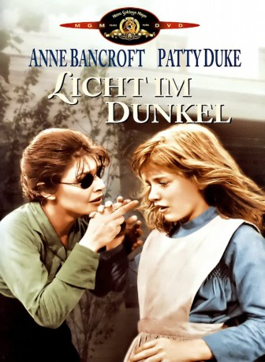
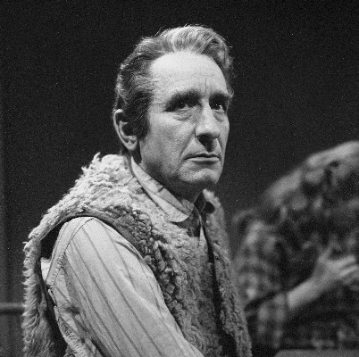

#9152 Licht im Dunkel
Alternativ: The Miracle Worker
Auszeichnungen: 2 Oscars gewonnen für 3 Oscars nominiert 1 GoldenGlobes gewonnen 1 BAFTA-Awards gewonnen
 
 IMDB-Wertung: 8.1 / 10
IMDB-Wertung: 8.1 / 10  Metascore: 0
Metascore: 0 
Die Eltern der blinden und taubstummen Helen Keller wissen sich nicht mehr zu helfen. Ihre Tochter versteht ihre Welt einfach nicht und randaliert und terrorisiert ihre Mitmenschen die meiste Zeit des Tages. Aus Verzweiflung holen die Kellers schließlich die Lehrerin Annie Sullivan in ihr Haus, in der Hoffnung, so dem benachteiligten Kind etwas beibringen zu können. Die ebenfalls blinde Frau nimmt den Kampf mit dem Teenager auf…
Jahr: 1962
Dauer: 102 Minuten
FSK: 12
Land: USA Studio: United ArtistsTonspuren: DD5.1 - ,
Untertitel:
Auflösung: 1080p (1920x1080) Größe: 8079 MB
Genre: Drama, Biographie
Regisseur: Arthur Penn
Drehbuch: William Gibson
Soundtrack: Laurence Rosenthal
Darsteller:
 Anne Bancroft als Annie Sullivan
Anne Bancroft als Annie Sullivan-  Victor Jory als Captain Arthur Keller
- Inga Swenson als Kate Keller
- Andrew Prine als James Keller
- Patty Duke als Helen Keller
- Judith Lowry als 1st Crone (uncredited)
- Beah Richards als Viney - Keller Maid (uncredited)
- Kathleen Comegys als Aunt Ev
- Maribel Ayuso als Undetermined Role (uncredited)
- Dale Ellen Bethea als Martha at Age 10 (uncredited)
- John Bliss als Admissions Officer (uncredited)
- Grant Code als Doctor (uncredited)
- Michael Darden als Percy at Age 10 (uncredited)
- Michele Farr als Annie at Age 10 (uncredited)
- William F. Haddock als 2nd Crone (uncredited)
- Jack Hollander als Mr. Anagnos of Perkins School in Boston (uncredited)
- Alan Howard als Jimmie at Age 8 (uncredited)
- Helen Ludlam als 3rd Crone (uncredited)
- Madge West als Undetermined Role (uncredited)
Datei: X:\1962\Licht im Dunkel (1962, FSK12, 1920x1080).mkv seit 19.07.2018
Festplatte: HD 1900-1970
 Es gibt insgesamt 23 Filme in der Gruppe '1962'
Es gibt insgesamt 23 Filme in der Gruppe '1962'